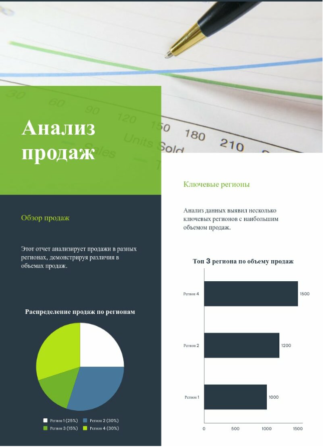

Урок 3: Глубокий разбор цвета и шрифтов в инфографике
1. Почему цвет и шрифт имеют значение?
Визуальное восприятие информации на 80% зависит от грамотного сочетания цвета и типографики. Они влияют на:
- Читаемость — насколько легко усваивается информация.
- Эмоции — разные цвета вызывают разные ассоциации (например, синий = доверие, красный = срочность).
- Профессионализм — хаотичный дизайн снижает доверие к данным.
Пример:
Пример инфографики с контрастными цветами и четкими шрифтами.

2. Психология цвета в инфографике
Основные правила:
- Используйте не более 3-4 цветов (основной, акцентный, нейтральный).
- Контрастность — текст должен четко читаться на фоне.
- Значение цветов:
🔴 Красный
🔵 Синий
🟢 Зеленый
🟡 Желтый
⚫ Черный
Где брать палитры?
- Coolors.co — генератор гармоничных схем.
- Adobe Color — подбор по правилам сочетаемости.
- ColorHunt — готовые модные палитры.
Пример удачной палитры:
Синий (доверие) + зеленый (рост) + серый (нейтральность).
3. Типографика: как выбрать шрифты?
3 главных принципа:
- Читаемость — избегайте декоративных шрифтов для основного текста.
- Иерархия — заголовки, подзаголовки и основной текст должны отличаться.
- Сочетаемость — максимум 2 шрифта на проект (например, рубленый + классический).
Типы шрифтов и их применение:
| Тип | Примеры | Где использовать |
|---|---|---|
| Брусковые | Roboto, Arial | Цифры, статистика |
| Антиква | Georgia, Times | Текстовые блоки |
| Геометрические | Futura, Gotham | Заголовки, современные темы |
| Рукописные | Pacifico, Brush Script | Акценты (редко!) |
4. Практические советы
Для цвета:
- Проверяйте контраст с помощью WebAIM Contrast Checker.
- Для графиков используйте разные оттенки одного цвета вместо радуги.
Для шрифтов:
- Размеры: Заголовок — 24+ px, основной текст — 16-18 px.
- Межстрочный интервал (leading) — 1.5x от размера шрифта.
Практическое задание
Часть 1: Анализ
- Найдите 2 инфографики (удачную и неудачную).
- Разберите их по критериям:
- Цветовая палитра (сколько цветов, контраст).
- Шрифты (тип, иерархия, читаемость).
- Дайте оценку по шкале 1-10.
Часть 2: Создание
- Тема: «Статистика использования соцсетей в 2024 году».
- Требования:
- Палитра: 3 цвета (основной, акцентный, фон).
- Шрифты: 1 для заголовков, 1 для текста.
- Обязательные элементы: диаграмма + 2 ключевых факта.